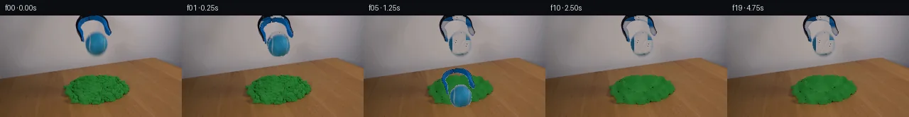

![首帧]()

Round 00
2026-11-04T23:57:04.672216+00:00像素候选变化代码 +318/−0inspection 更新
pixels 7c24f43d262b6583 · code 59b166b8bfb21aba
查看本轮 generate.py 真实 diff
--- previous/generate.py
+++ current/generate.py
@@ -0,0 +1,318 @@
+#!/usr/bin/env python3
+"""generate.py — PixelWorld-Text frame generation for case_0016.
+
+Scene: Blue-black grabber releases a blue tennis ball above green kinetic sand.
+Method: Pixel-level compositing — extract ball sprite, inpaint background behind ball,
+ animate free-fall with gravity, deform sand pile on impact.
+"""
+from pathlib import Path
+import numpy as np
+from PIL import Image
+
+# ── Configuration ──────────────────────────────────────────────────
+CASE_DIR = Path(__file__).parent
+FRAME_W, FRAME_H = 256, 144
+NUM_FRAMES = 20
+FPS = 4
+DT = 1.0 / FPS # 0.25 s
+
+# Ball position in frame 0
+BALL_CX0, BALL_CY0 = 133.5, 27.0
+BALL_RADIUS = 21 # effective pixel radius for compositing
+
+# Physics
+GRAVITY = 96.0 # px/s² — tuned so ball reaches sand in ~1.25s
+SAND_TOP = 84 # y-coordinate of sand pile top at ball center x
+
+# ── Load first frame ───────────────────────────────────────────────
+src = Image.open(CASE_DIR / "first_frame.png")
+src_arr = np.array(src).astype(np.float32)
+H, W = src_arr.shape[:2]
+
+# ── Step 1: Segment the ball from frame 0 ──────────────────────────
+# Ball is bright blue: b > r + 25, b > g + 15, b > 70, also some darker rim
+ball_mask = np.zeros((H, W), dtype=bool)
+ball_rim_mask = np.zeros((H, W), dtype=bool)
+for y in range(H):
+ for x in range(W):
+ r, g, b = src_arr[y, x]
+ if b > 70 and b > r + 25 and b > g + 15:
+ ball_mask[y, x] = True
+ # Include darker rim pixels adjacent to bright ball
+ elif b > 50 and b > r + 15 and b > g + 5:
+ # Check if near a main ball pixel
+ if (abs(x - BALL_CX0) < 26 and abs(y - BALL_CY0) < 28):
+ ball_rim_mask[y, x] = True
+
+# Combine core + rim
+ball_mask = ball_mask | ball_rim_mask
+
+# Also include the grabber tips that would naturally be visible after release
+# Don't mask out the grabber claws themselves
+
+# ── Step 2: Create clean background (no ball) ──────────────────────
+bg = src_arr.copy()
+
+# Sample wall colors for inpainting
+wall_colors = []
+for y in range(0, 55):
+ for x in [98, 99, 100, 101, 102, 156, 157, 158, 159, 160]:
+ wall_colors.append(src_arr[y, x])
+wall_colors = np.array(wall_colors)
+
+# Sample table colors
+table_colors = []
+for y in range(65, 80):
+ for x in range(90, 170):
+ r, g, b = src_arr[y, x]
+ if r > g > b and r > 80:
+ table_colors.append(src_arr[y, x])
+table_colors = np.array(table_colors)
+
+def sample_wall_color(y, x):
+ """Return a plausible wall color for a given position."""
+ idx = (y * 17 + x * 31) % len(wall_colors)
+ return wall_colors[idx]
+
+def sample_table_color(y, x):
+ """Return a plausible table color."""
+ idx = (y * 13 + x * 29) % len(table_colors)
+ return table_colors[idx]
+
+# Inpaint ball region
+ball_ys, ball_xs = np.where(ball_mask)
+ball_bbox = (ball_xs.min(), ball_ys.min(), ball_xs.max(), ball_ys.max())
+print(f"Ball mask: {len(ball_ys)} pixels, bbox={ball_bbox}")
+
+# Identify grabber claw regions to preserve
… diff truncated; 231 more lines …